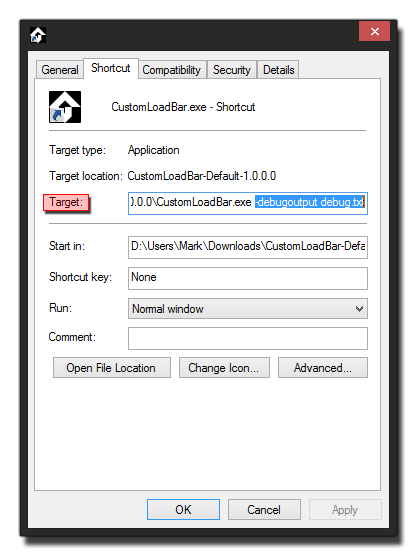

Al crear juegos, es importante que juegues a probar el archivo ejecutable para asegurarte de que la compilación final sea correcta y no tenga errores imprevistos ni diferencias. Sin embargo, la creación de un archivo ejecutable significa que, dado que no tiene acceso a la consola de depuración, ni a la ventana del compilador, puede ser difícil precisar y solucionar los problemas que pueda encontrar. Sin embargo, hay una solución para esto, y es usar parámetros de línea de comando para establecer ciertas propiedades cuando se ejecuta la versión ejecutable del juego, lo que a su vez permite crear archivos de registro de salida y probar otras situaciones especiales.
NOTA: esto solo está disponible en el módulo de destino estándar de Windows.
Para que esto funcione, primero debes crear un ejecutable de Windows de tu juego y tenerlo instalado en tu máquina de prueba. Una vez que haya hecho eso, necesita crear un acceso directo al juego en el escritorio. Aquí es donde agregaremos los parámetros que se pasarán al *.exe (para crear un acceso directo, haga clic con el botón derecho  el juego ejecutable y luego seleccione Enviar a > Escritorio (crear acceso directo) ).
el juego ejecutable y luego seleccione Enviar a > Escritorio (crear acceso directo) ).
Una vez que haya hecho su acceso directo, puede usar cualquiera de los siguientes parámetros en la ruta de destino:
- -noaudio: Esto apaga todo el audio de tu juego.
- -inawindow: Obliga al juego a comenzar en una ventana, incluso cuando está configurado para ejecutarse en modo de pantalla completa.
- -output <filename>: Envía la salida de la consola al nombre de archivo, incluidos los mensajes de depuración que tenga en su base de código.
- -debugoutput <filename>: Envía la salida de la consola al nombre del archivo, excluyendo cualquier mensaje de depuración personalizado, pero incluye información adicional del corredor para el informe de errores.
- -software: Forzará al juego a utilizar Software Vertex Processing en lugar de hardware para renderizar los gráficos del juego. Esto es especialmente útil para aquellas PC que usan un chipset Intel GFX integrado o muestran problemas de visualización en máquinas más antiguas.
- -intel: Esto activará una solución para los malos controladores de Intel, sin importar qué GPU se esté utilizando. Esta solución para aquellos malos pilotos ralentizará las cosas, dando un golpe de rendimiento notable para su juego, por lo que si no necesita la solución, no la use.
- -vanillaGFX: Usar esto desactiva cualquier comprobación del fabricante del controlador, y puede ser muy útil para probar tu juego "tal como está".
Vale la pena señalar que el <filename> en -output y -debugoutput puede ser el mismo si se desea, ya que el archivo se abre y se cierra en cada escritura.
Ahora debe ir al lugar donde creó el acceso directo al ejecutable del juego, y luego hacer clic derecho sobre él y seleccionar Propiedades.  Esto abrirá una ventana similar a la de arriba. Aquí puede agregar a la ruta de destino su línea de comando. Simplemente desplácese hasta el final de la ruta dada, agregue un espacio, luego la cadena de parámetros. Entonces, por ejemplo, para crear una salida de archivo de depuración tendría:
Esto creará ahora un archivo llamado " debug.txt "en la misma ubicación que el ejecutable (no la ubicación de acceso directo, pero donde está instalado el juego) con información de depuración y compilación de su juego terminado. Haga clic en" Aceptar "y luego use el atajo para ejecutar su juego y usarlo parámetros y ayuda con su depuración.
Para obtener más información sobre cómo depurar su juego, consulte la sección del manual sobre Depuración.
Prueba A / B usando la línea de comando
El corredor YoYo también se beneficia de un parámetro de línea de comando especial:
- -game <filename>: carga el archivo de juego dado
¿Por qué usarías esto? Bueno, normalmente no lo harías, pero si deseas tener más de una versión de tu juego funcionando a la vez, se puede hacer usando esto, haciendo que las pruebas comparativas A / B sean mucho más fáciles. Con este método podrías enfocarte en la prueba con otra persona o, como diseñador, tener una mejor idea de las cosas haciendo pruebas lado a lado.
Para configurar esto, necesitarás saber un par de cosas de antemano. Para empezar necesitarás el camino hacia el Runner mismo. Esto se puede encontrar en la carpeta de Datos del Programa de su sistema operativo Windows (esto puede estar oculto por la desactivación, por lo que tendrá que cambiar las propiedades de visualización para verlo), con un formato típico como este:
Tenga en cuenta que runtime_version la carpeta dependerá de los tiempos de ejecución que haya instalado actualmente. También necesitarás el camino hacia el <yourgame>.win archivo, ya que esto es a lo que apuntaremos al corredor. La forma más fácil de encontrar esto es ir a la carpeta Temp (normalmente ubicada en %localappdata%\Temp\GameMakerStudio\<game_name>\ ) y solo busca *.win, ya que eso te mostrará todos los disponibles y simplemente puedes elegir aquello de lo que necesitas obtener el camino completo.
Ahora, podríamos crear un atajo para el corredor como lo hicimos para el exe, y luego cambiar los parámetros según sea necesario, pero eso significa tener que abrirlo y editarlo entre pruebas, lo que frustra el propósito de que usemos esta funcionalidad para el lado pruebas de lado. En cambio, vamos a crear un par de pequeños archivos "por lotes" para manejar esto.
Para hacer esto, primero cree un nuevo documento de texto en su escritorio y ábralo en el Bloc de notas. Agregue lo siguiente:
Debes establecer la ruta temporal para que apunte a tu juego *.win archivo, y luego guardar esto como " GM_Test_1.bat "a su escritorio (tenga en cuenta que el Bloc de notas se guardará automáticamente como *.txt archivo a menos que elija "todos los archivos" de las opciones de diálogo guardar). Un ejemplo de cómo debería verse tu último comando sería:
Ahora, cree otro archivo de texto y agregue la misma línea, solo que esta vez apunte a la ruta de acceso para la segunda versión del juego con la que desea hacer pruebas lado a lado, y lo guardará como " GM_Test_2.bat ". Puedes hacer doble clic  cualquiera de ellos para mostrar las diferentes versiones de tu juego, y tenerlos como archivos por lotes significa que puedes abrirlos fácilmente nuevamente para editarlos y cambiar el juego que se está probando.
cualquiera de ellos para mostrar las diferentes versiones de tu juego, y tenerlos como archivos por lotes significa que puedes abrirlos fácilmente nuevamente para editarlos y cambiar el juego que se está probando.